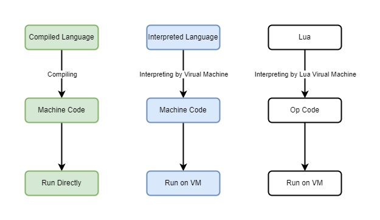
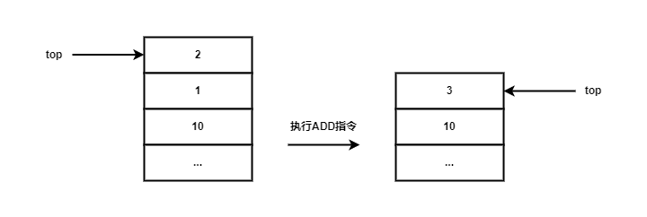
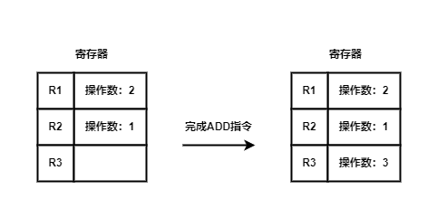

和其他语言的执行差异
一般语言分为编译型语言（Compiled Language）和解释型语言（Interpreted Language）。前者会先将代码编译为目标机器可运行的机器码，而后由目标机器直接运行，编译型语言的特点是在编译阶段实现跨平台，不同平台的编译结果不一样，由于它能由机器直接执行，速度会很快。解释型语言则是将代码交给解释器翻译执行，它的特点是由解释器来实现跨平台，平台的差异由语言自身的解释器来解决，由于它需要由解释器来执行，相比前者会慢不少。

Lua 作为一门解释型语言，它实现了自己的虚拟机充当解释器的角色，来解释执行 Lua 代码。这里有一点需要注意，Lua 会先将代码进行语法词法分析，生成虚拟机能看懂的字节码（后称OpCode），再由虚拟机执行。现在不少解释型语言和 Lua 采用了一样的思路，虽然最终是在解释器中执行，但是仍然预先制定了一套语言定制化的编译规则，将代码编译为对应的字节码后再交给解释器执行，这样做会加快代码的执行速度但是仍然有部分语言是采用直接解释执行。比如 Bash、AWK、早期的 PHP、Basic 等
Lua 的即时编译和JIT的区别
Lua 虽然是先编译为字节码，再交由虚拟机执行，但编译也是发生在运行阶段的，也就是说 Lua 是即时编译的。即时编译并不会妨碍它作为解释型语言在运行时可修改的特性，但 Lua 的即时编译和传统的 JIT 有所不同。
Lua 的编译执行过程分为两个阶段：
- 即时编译阶段（源代码 –> 字节码）
- 当 Lua 脚本被加载时，Lua 虚拟机会将源代码即时编译为字节码
- 这一步发生在运行时，即每次加载脚本时都会进行，这个编译过程由
lua_load函数完成
- 解释运行阶段（字节码 –> 执行）
- 编译后的字节码并不会被进一步编译为机器码，而是由 Lua 虚拟机逐条解释执行
Lua 的即时编译与真正的 JIT 编译的区别在于：Lua 即时编译的结果并非目标机器码，而是一种中间表示，只有它的虚拟机能够解释执行。
Lua 为何不采用 JIT 编译？
它的官方解释器（PUC-Rio Lua）并没有集成 JIT 编译器，原因如下：
- 跨平台性：
- Lua 以简单和轻量为核心设计目标，官方解释器支持多种平台，而字节码和虚拟机的实现更容易移植
- JIT 编译器需要针对特定的 CPU 架构生成机器码，移植性较差
- 嵌入式使用：
- Lua 主要被设计为嵌入式脚本语言，典型场景包括嵌入游戏引擎、应用程序等
- 字节码解释足以满足大部分需求，同时减少了 JIT 编译的复杂性和内存开销
- 性能需求：
- Lua 的性能在许多嵌入式场景下已经足够
- 对于更高性能需求的场景，可以使用 LuaJIT（Lua 的一个 JIT 编译器版本，将字节码直接编译为机器码，极大提升了性能）
虚拟机概览
除了 Lua，还有一些其他语言也实现了自己的虚拟机比如 Java 和 Python。一般一个语言的虚拟机的职责如下：
- 将源代码编译成虚拟机可识别执行的字节码
- 为函数调用准备调用栈
- 内部维持一个指令指针（IP，Instruction Pointer）来保存下一个将执行的指令地址。在 Lua 中，该 IP 对应的是 PC 指针，后续会讲
- 模拟一个 CPU 的运行：循环拿出由 IP 指向的字节码，根据字节码格式进行解码，然后执行
这样一来，一台抽象的计算机就出现了，这也是它们被称为虚拟机的原因。
虚拟机有两种实现方式：基于栈（stack-based）和基于寄存器（register-based），市面上常见的都是前者，而 Lua 属于后者。
基于栈的虚拟机
对于这种虚拟机，字节码的操作数从栈顶弹出，执行完操作后再压入栈顶，下图是一个加法操作后栈结构的变化：

这个操作对应的伪代码如下：
1 | POP 2 |
完成一个加法操作需要 4 条字节码，需要用额外的指令准备数据是这种设计的缺点。但是优点是指令不需要关心操作数的地址，在执行操作前已经将操作数准备在栈顶了
基于寄存器的虚拟机
和基于栈的虚拟机不同，这种虚拟机将操作数存放在 “CPU的寄存器” 中，这个寄存器不是物理意义上的寄存器，而是虚拟机的一种抽象实现。它实现前面的加法操作的示意图如下：

它对应的伪代码如下：
1 | ADD R1,R2,R3 #寄存器R1与R2相加结果保存在寄存器R3中 |
这种虚拟机的优点是，指令简短，但缺点是程序需要关注操作数的位置。Lua选择这种寄存器的主要目的是尽可能高效。
执行源码概览
这里以一个宏观的角度浏览整个编译解释和执行的流程，具体函数的分析参考函数解读
luaL_dofile
这是 Lua 执行文件的调用函数，本身是个宏，等效于先调用
luaL_loadfile，再调用 lua_ocall：
1 |
luaL_loadfile 负责进行词法语法分析，lua_pcall 则将分析结果放到虚拟机中执行